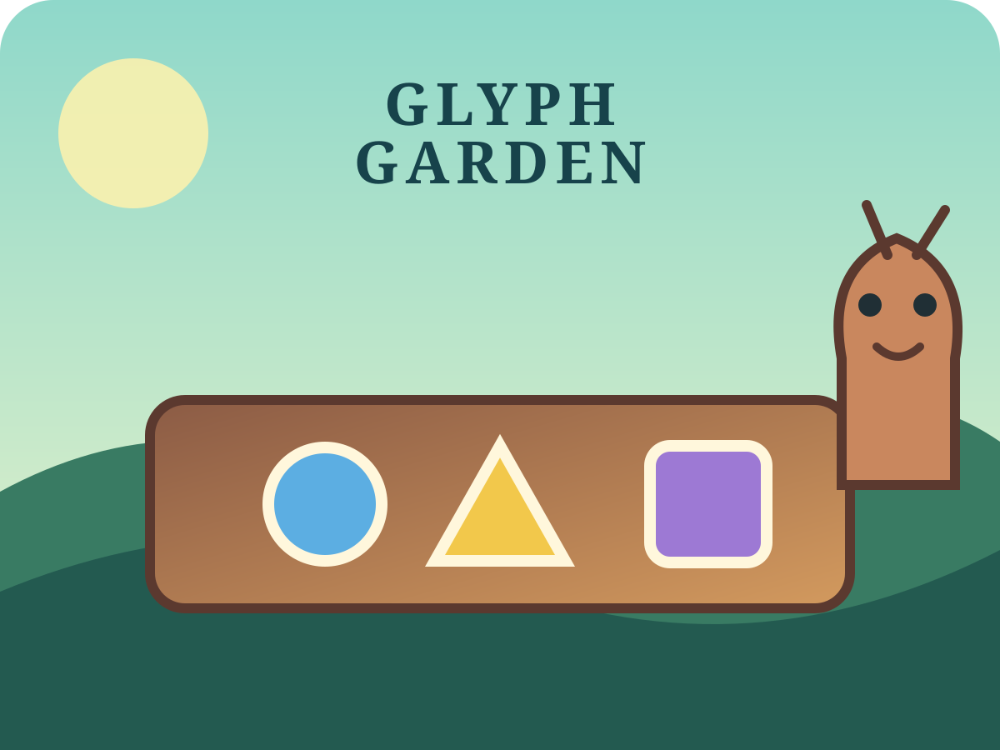

Read shape, colour, and sequence rules across thirty authored mosslight plots.
Glyph Garden Guide
Glyph Garden is a thirty-stage visual-logic campaign about reading an active rule before committing a tile. Moss Shell Taro leads six garden arcs that begin with complete shape-and-colour matches, separate those attributes, and then combine them into short readable sequences.
World and Garden Goal
The mosslight beds have lost their planting pattern before the evening festival. Each stage is one authored plot with a visible request, six tactile glyph choices, and one or more planting steps. Help Taro restore the beds in order. Every fifth plot is a checkpoint that changes the decision rather than merely adding more tiles, and Stage 30 is the festival finale that asks for the full garden vocabulary.
Game Systems
A request always names the active matching rule. Paired Sprouts asks for both shape and colour. Shape Beds ignores colour, so several tempting colour matches can be wrong. Colour Wells reverses that priority and ignores shape. Sequence Arbor asks for two or three complete matches in order. Switching Paths alternates shape-only and colour-only decisions. Festival Mastery combines all three rule families in longer sequences. A wrong choice never removes progress or spends currency; it produces an immediate explanation and leaves the player free to compare again.
How to Play
- Choose Start Game, then select an unlocked card from the horizontal thirty-stage rail.
- Read the arc name, the active rule, and the number of planting steps before selecting a glyph.
- Compare the visible target with all six choices. Shape-only and colour-only stages deliberately include distractors that match the ignored attribute.
- Select a tile and activate Plant this glyph. A correct sequence step advances to the next request; a wrong choice remains safely retryable.
- Complete the final step to save the clear, unlock the next stage, and open Result with Next Stage, Stages, and Replay actions.
Rules and Controls
Each stage has a deterministic authored request and exactly one legal answer for the active rule. Touch, mouse, Enter, and Space activate the same native buttons. There is no timer, energy meter, purchase, ranking, or random answer. The current step, total sequence length, selected glyph, and feedback are announced visibly and through live regions.
Strategy Tips
- Say the active rule to yourself before comparing tiles; a familiar colour may be irrelevant on a shape-only stage.
- Eliminate choices that fail the required attribute first, then compare the remaining candidates against the target.
- During a sequence, treat every step as a fresh request. The rule may switch even when the target artwork looks similar.
- Replay checkpoints 5, 10, 15, 20, 25, and 30 to practise the exact transition introduced by each arc.
Stages and Difficulty Growth
Stages 1–5 teach exact two-attribute matching and end with a two-step checkpoint. Stages 6–10 isolate shape, while 11–15 isolate colour, teaching the player to ignore a persuasive but irrelevant clue. Stages 16–20 introduce ordered exact-match sequences. Stages 21–25 switch between shape, colour, and exact rules inside one plot. Stages 26–30 are mastery beds with three- and four-step routes; the final Mosslight Festival combines exact, shape-only, colour-only, and exact matching in that order. Clearing a stage unlocks the next one locally, while every cleared card remains replayable.
Design and Accessibility
The campaign uses one logical layout across phone, landscape, and desktop sizes. Large native buttons, text labels beside every glyph, visible selected state, rule copy, and non-colour shape silhouettes keep the puzzle understandable without relying on hue alone. The block-style Taro and glyph images carry object identity; CSS supplies layout and selection framing rather than replacing gameplay art.
Player and Save Information
Unlocked stages, cleared-stage history, best checks, locale, and sound preference are stored only in this browser. No account or cloud sync is required, and clearing site data or moving to another browser can create a separate save. The game is free, contains no chat or purchase flow, and is a calm entertainment puzzle rather than a formal test of vision or ability.
Frequently Asked Questions
- How many stages are included?
- Thirty authored stages are arranged in six arcs of five, with decision-changing checkpoints at Stages 5, 10, 15, 20, 25, and 30.
- Why can a tile with the same colour be wrong?
- The active rule may ask for shape only, colour only, or both. Read the rule above the request before choosing.
- What happens after a wrong choice?
- The stage stays open, explains that the active rule was not satisfied, and lets you choose again without losing progress.
- Does progress move between devices?
- No. Progress uses local browser storage, so another device or browser profile begins with its own save.